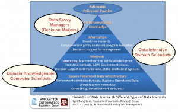
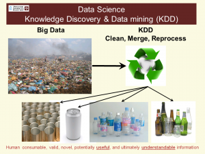

Population Informatics Research Group
Data Science
Overarching research question: How can we use the abundance of existing digital data, aka big data, (e.g. government administrative data, electronic health records) to support accurate evidence based decisions for policy, management, legislation, evaluation, and research while protecting the confidentiality of individual subjects of the data? This question focuses on the data science of using massive secondary datasets, a step before the traditional statistical methods can be applied to the data to address specific questions to improve population health (public health).
Preferred approaches: Data Science – To build efficient and effective human computer hybrid processes and systems to clean, integrate, and extract valuable information from raw chaotic data and deliver the information in a timely manner to decision makers (e.g. researchers, policy makers, clinicians) to improve public health.
What is Data Science
Some quotes I like
- Telling your story with data using the scientific method (Hye-Chung Kum)
- Data Science is a mash-up of several different disciplines (Data Engineering, Scientific Methods, Math, Statistics, Advanced Computing, Visualization, Hacker Mindset, Domain Expertise). We also noted that an individual data scientist is most likely an expert in one or two of these disciplines and proficient in another two or three. There is probably no living person who is expert in all these disciplines, and an extremely rare person would be proficient in 5 or 6 of these disciplines. This means that data science must be practiced as a team where, across the membership of the team, there is expertise and proficiency across all the disciplines (Wikibooks: Data Science Intro).
- Knowledge of R , Python or other tools is secondary to knowing how to approach the data, how to ask right questions, and good intuition about what works and what not (Gregory Piatetsky-Shapiro, Analytics/Data Mining Expert, KDnuggets President).
- as one long-time “data scientist” I love the new term for what I do. I think it aptly describes what I do, what I’ve always done, with data (Daniel Dean Gutierrez, Data Scientist at AMULET Analytics).
- And, of course, a natural curiosity on how things work and the ability to hire and manage other folks who also have a passion for information. (Jim Lola, Entrepreneur, Sr. Manager, Technologist, Architect, & Author )
Required Skill Set: Many have written on the essential skill set for Data Science. The following are common across most and those that I agree with in the order of importance.
- Curiosity: a desire to go beneath the surface and discover and distill a problem down into a very clear set of hypotheses that can be tested with data
- Communication: The ability to communicate and translate between data, models, and real world problems
- Critical Thinking: The ability to reason and think through a real problem, understand the data at hand with little documentation, the limitations, and get the best answer possible for the given problem and data. The ability to know how much accuracy is required in the given problem and an intuition about the accuracy of the data at hand.
- Cleverness: The ability to look at a problem in different, creative ways
- Programming (software engineering): The ability to use the tools (programs like R, SAS, Phython, Excel etc) to manipulate data easily into any shape, and develop efficient processes of converting data into information that can be iteratively updated and adjusted easily. Developing tractable and agile processes with sufficient but minimal documentation is key.
- Statistics/Math: The ability to understand how to take data points and build models
- Domain Knowledge: The ability to either know the domain knowledge (i.e., healthcare, employment, education, welfare, etc.) or learn it quickly or work (communicate well) with a domain expert
Interested to become a Data Scientist? You can try some data science courses at Coursera.
Depending on your mix of expertise, there are three types of data scientists

I think a well defined field called KDD (Knowledge Discovery and Datamining) describes the data science process the best.

Data Science Videos

{kind=link}
{kind=link}